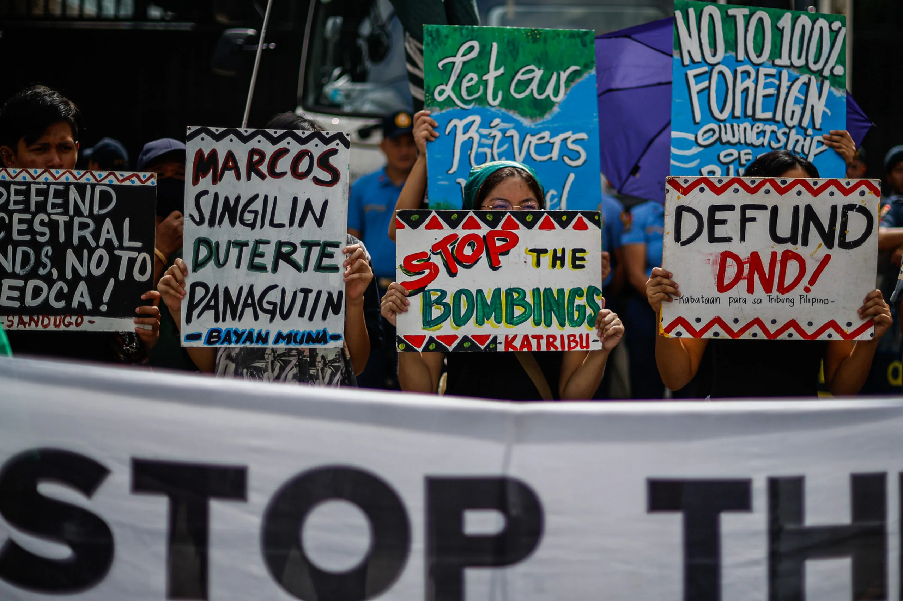

Photo from Rappler / Global Witness
Philippines still deadliest country in Asia for environmental defenders in 2024
By Jee Y. Geronimo, Published on September 17, 2025
The Philippines was still the deadliest country in Asia for land and environmental defenders in 2024, a new report from watchdog group Global Witness said on Wednesday, September 17.
This is the 12th consecutive year the country reported the highest number of murders and long-term disappearances in Asia since Global Witness started counting in 2012.
Although the Philippines saw a decrease in cases — 8 in 2024 compared to the 17 in 2023 — Global Witness noted that majority or six of the attacks in 2024 “were linked to government bodies,” with four cases involving the military.
Global Witness named the eight defenders in its report:
- Ronde Arpilleda Asis
- Dionisio Baloy
- Alberto Ortula Cuartero
- Jay-El Maligday
- Gregorio Navarette Jr.
- Boyet Rodrigo
- Bernard Torres
- Felix Salaveria Jr. (disappeared)
The group said that while the cases in 2024 decreased, violent attacks “have not necessarily abated.”
“Media and civil society reports have documented attacks against peasant communities, most notably in the Masbate, Northern Samar, Negros Occidental and Sultan Kudarat regions of the country — where there is conflict over land and natural resources,” according to the report.
The latest figure brings the total number of environmental defender killings and disappearances in the Philippines since 2012 to 306. The country still ranked third in the world, after Colombia’s 509 cases and Brazil’s 413.
The report also noted that Philippine rights group Karapatan documented 14 killings of human rights defenders in 2024.
“Defenders in the Philippines continue to face repression, including abduction and criminalization — often through the tactic of red-tagging, where they are falsely accused of being communist or terrorists,” Global Witness said.
It added, “Recent research has also exposed state-sponsored online harassment, particularly against young human rights defenders.”
In Asia, patterns in weaponizing laws emerge
Wednesday’s report also noted that detentions and criminalization of land and environmental defenders are becoming increasingly common in Asia, with patterns emerging regarding the types of laws being weaponized against them.
It found that in the Philippines, India, Indonesia, and Vietnam alone, 341 defenders were arrested or detained for more than 12 hours across 344 separate incidents between 2018 and 2024.
Again, the Philippines had the most recorded incidents at 140.
“In the Philippines, defenders are being branded as terrorists or communist rebels in a process known as ‘red-tagging’ — putting them at risk of extrajudicial killing, pre-trial detention, criminal charges, freezing of assets, and government surveillance. Military presence is also extremely common during defender arrests,” Global Witness noted.
For the Philippines, Global Witness recommended the following:
- Disband the Anti-Terrorism Council or implement clear due process requirements, transparency, and the possibility of appeal.
- Increase oversight of military and police misconduct.
- Withdraw the military from civilian policing duties.
- Abolish the National Task Force to End Local Communist Armed Conflict.
- Repeal laws that criminalize defamation and cyber libel, and ensure that any civil defamation cases include truth as a complete defense.
Colombia remained the deadliest country in the world for defenders, recording 48 cases in 2024. Mining was the deadliest sector, followed by logging and agribusiness.
Aside from its recommendations to states and businesses, Global Witness also urged world leaders to recognize defenders’ role in protecting the environment at the upcoming United Nations Climate Change Conference or COP30 in Belém, Brazil.
“The protection and meaningful participation of land and environmental defenders at COP30 and beyond is an essential element of the fight against climate change. It must become a core principle of the Parties to the UN Framework Convention on Climate Change and the Convention on Biological Diversity process,” the report noted.